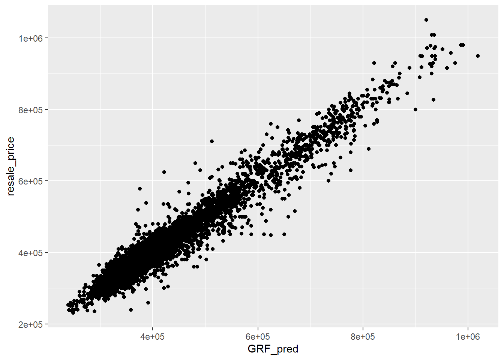

pacman::p_load(sf, spdep, GWmodel, SpatialML,
tmap, rsample, Metrics, tidyverse)Hands-on Exercise 8
Getting Started
Predictive model use statistical learning or machine learning techniques to predict its outcome in the future using relevant variables.
Geospatial predictive modeling is conceptually rooted in the principle that the occurrences of events being modeled are limited in distribution. When geographically referenced data are used, occurrences of events are neither uniform nor random in distribution over space. There are geospatial factors (infrastructure, sociocultural, topographic, etc) that constrain and influence where the location of events occur. Geospatial predictive modeling attempt to describe those constraints and influences by spatially correlating occurrences of historical geospatial locations with environmental factors. So in this hands on exercise, we’ll learn to build predictive model using geographical random frorest method.
Import Libraries
The libraries used in this exercise are:
sf: simple features in R to encode and analyze spatial vector data
spdep: create spatial weights matrix object from polygon ‘contiguities’
tmap: used to draw thematic map
tidyverse: collection of R packages that for data manipulation and visualization
GWmodel: techniques form particulae branch of spatial statistics termed geographically weighted (GW model)
SpatialML: implement spatial extension of random forest algorithm
rsample: classes adn functions to create and summarize different type sof resampling objects (e.g. bootstrap, cross-validation)
Metrics: evaluation metrics in R for supervised ML
The Data
The data we’ll be using in this hands on exercise are:
HDB Resale data: list of HDB resale transaction prices in Singapore from Jan 2017 onwards
MP14_SUBZONE_WEB_PL: polygon feature data providing information of URA 2014 Master Plan Planning Subzone Boundary data (ESRI shapefile)
Location factors with geographic coordinates:
Eldercare data: list of eldercare in Singapore (from data.gov.sg)
Hawker centre: list of hawker centre in Singapore (from data.gov.sg)
Supermarket: list of supermarket in Singapore (from data.gov.sg)
Park: list of parks in Singapore (from data.gov.sg)
CHAS Clinic: list of CHAS clinic in Singapore (from data.gov.sg)
Childcare Service: list of childcare service in Singapore (from data.gov.sg)
Kindergatens: list of kindergarten in Singapore (from data.gov.sg)
MRT data: list of MRT/LRT stations in Singapore with station name and codes (from datamall.lta.gov.sg)
Bus Stop: list of bus stops in Singapore (from datamall.lta.gov.sg)
Locational factors without geographic coordinates:
Primary school: data extracted from the list on General Information of schools
CBD coordinates (from Google)
Shopping malls: list of shopping amlls in Singapore (from Wikipedia)
Good primary schools: list of primary schools ordered by popularity ranking (from local Salary Forum)
Data Preparation
mdata <- read_rds("data/rawdata/mdata.rds")Data Sampling
Next, we’ll split the dataset 65% and 35% for training and testing using initial_split()
set.seed(1234)
resale_split <- initial_split(mdata,
prop = 6.5/10,)
train_data <- training(resale_split)
test_data <- testing(resale_split)The output will be saved into rds file.
write_rds(train_data, "data/model/train_data.rds")
write_rds(test_data, "data/model/test_data.rds")Derive Correlation Matrix
Before we create the model, its good practice to use correlation matrix to examine signs of multicollinearity.
mdata_nogeo <- mdata %>%
st_drop_geometry()
corrplot::corrplot(cor(mdata_nogeo[, 2:17]),
diag = FALSE,
order = "AOE",
tl.pos = "td",
tl.cex = 0.5,
method = "number",
type = "upper")
As can be seen, all of the values are less than 0.8, which means that the variables are not strongly correlated.
Retrieve Stored Data
train_data <- read_rds("data/model/train_data.rds")
test_data <- read_rds("data/model/test_data.rds")
names(train_data) [1] "resale_price" "floor_area_sqm"
[3] "storey_order" "remaining_lease_mths"
[5] "PROX_CBD" "PROX_ELDERLYCARE"
[7] "PROX_HAWKER" "PROX_MRT"
[9] "PROX_PARK" "PROX_GOOD_PRISCH"
[11] "PROX_MALL" "PROX_CHAS"
[13] "PROX_SUPERMARKET" "WITHIN_350M_KINDERGARTEN"
[15] "WITHIN_350M_CHILDCARE" "WITHIN_350M_BUS"
[17] "WITHIN_1KM_PRISCH" "geometry" Build Non-Spatial Multiple Linear Regression
price_mlr <- lm(resale_price ~ floor_area_sqm +
storey_order + remaining_lease_mths +
PROX_CBD + PROX_ELDERLYCARE + PROX_HAWKER +
PROX_MRT + PROX_PARK + PROX_MALL +
PROX_SUPERMARKET + WITHIN_350M_KINDERGARTEN +
WITHIN_350M_CHILDCARE + WITHIN_350M_BUS +
WITHIN_1KM_PRISCH,
data=train_data)
summary(price_mlr)As can be seen, the model performs well achieving the score of 0.737 on adjusted R-square and is significant (p-value less thna 0.05). Apart from that, all of the variables used for prediction are contributing to teh model.
We’ll save the results in rds file.
write_rds(price_mlr, "data/model/price_mlr.rds" ) gwr Predictive Model
In this section, we’ll learn hwo to calibrate model to predict HDB resale price using geographically weighted regression.
Compute Adaptive Bandwidth
First, we;ll use bw.gwr() to determine optimal bandwidth to be used. We’ll be using CV method to determine optimal bandwidth
bw_adaptive <- bw.gwr(
formula = resale_price ~ floor_area_sqm +
storey_order + remaining_lease_mths +
PROX_CBD + PROX_ELDERLYCARE + PROX_HAWKER +
PROX_MRT + PROX_PARK + PROX_MALL +
PROX_SUPERMARKET + WITHIN_350M_KINDERGARTEN +
WITHIN_350M_CHILDCARE + WITHIN_350M_BUS +
WITHIN_1KM_PRISCH,
data=train_data,
approach="CV",
kernel="gaussian",
adaptive=TRUE,
longlat=FALSE)
write_rds(bw_adaptive, "data/model/bw_adaptive.rds")The output shows that 40 neighbour points will be the optimal bandwidth to be used if adaptive bandwidth is used for the data set.
Construct Adaptive Bandwidth gwr Model
We’ll reload the bandwidth like below
bw_adaptive <- read_rds(
"data/model/bw_adaptive.rds")Now we’ll calibrate the gwr-based hedonic pricing model using adaptive bandwidth and Gaussian kernel
gwr_adaptive <- gwr.basic(
formula = resale_price ~ floor_area_sqm +
storey_order + remaining_lease_mths +
PROX_CBD + PROX_ELDERLYCARE +
PROX_HAWKER + PROX_MRT + PROX_PARK +
PROX_MALL + PROX_SUPERMARKET +
WITHIN_350M_KINDERGARTEN +
WITHIN_350M_CHILDCARE +
WITHIN_350M_BUS + WITHIN_1KM_PRISCH,
data=train_data,
bw=bw_adaptive,
kernel = 'gaussian',
adaptive=TRUE,
longlat = FALSE)
write_rds(gwr_adaptive, "data/model/gwr_adaptive.rds")Retrieve gwr Output Object
We’ll load the saved gwr model
gwr_adaptive <- read_rds("data/model/gwr_adaptive.rds")gwr_adaptive ***********************************************************************
* Package GWmodel *
***********************************************************************
Program starts at: 2025-10-25 14:09:26.857794
Call:
gwr.basic(formula = resale_price ~ floor_area_sqm + storey_order +
remaining_lease_mths + PROX_CBD + PROX_ELDERLYCARE + PROX_HAWKER +
PROX_MRT + PROX_PARK + PROX_MALL + PROX_SUPERMARKET + WITHIN_350M_KINDERGARTEN +
WITHIN_350M_CHILDCARE + WITHIN_350M_BUS + WITHIN_1KM_PRISCH,
data = train_data, bw = bw_adaptive, kernel = "gaussian",
adaptive = TRUE, longlat = FALSE)
Dependent (y) variable: resale_price
Independent variables: floor_area_sqm storey_order remaining_lease_mths PROX_CBD PROX_ELDERLYCARE PROX_HAWKER PROX_MRT PROX_PARK PROX_MALL PROX_SUPERMARKET WITHIN_350M_KINDERGARTEN WITHIN_350M_CHILDCARE WITHIN_350M_BUS WITHIN_1KM_PRISCH
Number of data points: 10335
***********************************************************************
* Results of Global Regression *
***********************************************************************
Call:
lm(formula = formula, data = data)
Residuals:
Min 1Q Median 3Q Max
-205193 -39120 -1930 36545 472355
Coefficients:
Estimate Std. Error t value Pr(>|t|)
(Intercept) 107601.073 10601.261 10.150 < 2e-16 ***
floor_area_sqm 2780.698 90.579 30.699 < 2e-16 ***
storey_order 14299.298 339.115 42.167 < 2e-16 ***
remaining_lease_mths 344.490 4.592 75.027 < 2e-16 ***
PROX_CBD -16930.196 201.254 -84.124 < 2e-16 ***
PROX_ELDERLYCARE -14441.025 994.867 -14.516 < 2e-16 ***
PROX_HAWKER -19265.648 1273.597 -15.127 < 2e-16 ***
PROX_MRT -32564.272 1744.232 -18.670 < 2e-16 ***
PROX_PARK -5712.625 1483.885 -3.850 0.000119 ***
PROX_MALL -14717.388 2007.818 -7.330 2.47e-13 ***
PROX_SUPERMARKET -26881.938 4189.624 -6.416 1.46e-10 ***
WITHIN_350M_KINDERGARTEN 8520.472 632.812 13.464 < 2e-16 ***
WITHIN_350M_CHILDCARE -4510.650 354.015 -12.741 < 2e-16 ***
WITHIN_350M_BUS 813.493 222.574 3.655 0.000259 ***
WITHIN_1KM_PRISCH -8010.834 491.512 -16.298 < 2e-16 ***
---Significance stars
Signif. codes: 0 '***' 0.001 '**' 0.01 '*' 0.05 '.' 0.1 ' ' 1
Residual standard error: 61650 on 10320 degrees of freedom
Multiple R-squared: 0.7373
Adjusted R-squared: 0.737
F-statistic: 2069 on 14 and 10320 DF, p-value: < 2.2e-16
***Extra Diagnostic information
Residual sum of squares: 3.922202e+13
Sigma(hat): 61610.08
AIC: 257320.2
AICc: 257320.3
BIC: 247249
***********************************************************************
* Results of Geographically Weighted Regression *
***********************************************************************
*********************Model calibration information*********************
Kernel function: gaussian
Adaptive bandwidth: 40 (number of nearest neighbours)
Regression points: the same locations as observations are used.
Distance metric: Euclidean distance metric is used.
****************Summary of GWR coefficient estimates:******************
Min. 1st Qu. Median 3rd Qu.
Intercept -3.2111e+08 -4.7727e+05 -8.3004e+03 5.5025e+05
floor_area_sqm -2.8714e+04 1.4475e+03 2.3011e+03 3.3900e+03
storey_order 3.3186e+03 8.5899e+03 1.0826e+04 1.3397e+04
remaining_lease_mths -1.4431e+03 2.6063e+02 3.9048e+02 5.2865e+02
PROX_CBD -1.0837e+07 -5.7697e+04 -1.3787e+04 2.6552e+04
PROX_ELDERLYCARE -3.1896e+07 -4.0643e+04 1.0562e+04 6.1054e+04
PROX_HAWKER -2.3985e+08 -5.1365e+04 3.0026e+03 6.4287e+04
PROX_MRT -1.1544e+07 -1.0488e+05 -4.9373e+04 5.1037e+03
PROX_PARK -6.5961e+06 -4.8671e+04 -8.8128e+02 5.3498e+04
PROX_MALL -1.8113e+07 -7.4238e+04 -1.3982e+04 4.9779e+04
PROX_SUPERMARKET -4.5761e+06 -6.3461e+04 -1.7429e+04 3.5616e+04
WITHIN_350M_KINDERGARTEN -4.1638e+05 -6.0040e+03 9.0209e+01 4.7127e+03
WITHIN_350M_CHILDCARE -1.0273e+05 -2.2375e+03 2.6668e+02 2.6388e+03
WITHIN_350M_BUS -1.1757e+05 -1.4719e+03 1.1626e+02 1.7584e+03
WITHIN_1KM_PRISCH -6.6465e+05 -5.5959e+03 2.6916e+02 5.7500e+03
Max.
Intercept 1.6493e+08
floor_area_sqm 5.0908e+04
storey_order 2.9537e+04
remaining_lease_mths 1.8119e+03
PROX_CBD 2.2166e+07
PROX_ELDERLYCARE 8.2445e+07
PROX_HAWKER 5.9654e+06
PROX_MRT 2.0189e+08
PROX_PARK 1.5072e+07
PROX_MALL 1.0443e+07
PROX_SUPERMARKET 3.8330e+06
WITHIN_350M_KINDERGARTEN 6.6799e+05
WITHIN_350M_CHILDCARE 1.0802e+05
WITHIN_350M_BUS 3.7313e+04
WITHIN_1KM_PRISCH 5.0133e+05
************************Diagnostic information*************************
Number of data points: 10335
Effective number of parameters (2trace(S) - trace(S'S)): 1730.101
Effective degrees of freedom (n-2trace(S) + trace(S'S)): 8604.899
AICc (GWR book, Fotheringham, et al. 2002, p. 61, eq 2.33): 238871.8
AIC (GWR book, Fotheringham, et al. 2002,GWR p. 96, eq. 4.22): 237036.9
BIC (GWR book, Fotheringham, et al. 2002,GWR p. 61, eq. 2.34): 238209
Residual sum of squares: 4.829176e+12
R-square value: 0.9676571
Adjusted R-square value: 0.9611535
***********************************************************************
Program stops at: 2025-10-25 14:11:45.558217 gwr_adaptive performed better than the non-spatial multiple regression model as its adjusted r square is at 0.96, which means that the model can explain 96% of the resale price. The AICC fits better with the gwr_adaptive.
Compute Adaptive Bandwidth for Test Dara
gwr_bw_test_adaptive <- bw.gwr(
formula = resale_price ~ floor_area_sqm +
storey_order + remaining_lease_mths +
PROX_CBD + PROX_ELDERLYCARE + PROX_HAWKER +
PROX_MRT + PROX_PARK + PROX_MALL +
PROX_SUPERMARKET + WITHIN_350M_KINDERGARTEN +
WITHIN_350M_CHILDCARE + WITHIN_350M_BUS +
WITHIN_1KM_PRISCH,
data=test_data,
approach="CV",
kernel="gaussian",
adaptive=TRUE,
longlat=FALSE)Take a cup of tea and have a break, it will take a few minutes.
-----A kind suggestion from GWmodel development group
Adaptive bandwidth: 3447 CV score: 1.902155e+13
Adaptive bandwidth: 2138 CV score: 1.752645e+13
Adaptive bandwidth: 1328 CV score: 1.556299e+13
Adaptive bandwidth: 828 CV score: 1.357498e+13
Adaptive bandwidth: 518 CV score: 1.030751e+13
Adaptive bandwidth: 327 CV score: 8.348364e+12
Adaptive bandwidth: 208 CV score: 6.860544e+12
Adaptive bandwidth: 135 CV score: 5.969504e+12
Adaptive bandwidth: 89 CV score: 5.242221e+12
Adaptive bandwidth: 62 CV score: 4.742767e+12
Adaptive bandwidth: 43 CV score: 4.357839e+12
Adaptive bandwidth: 34 CV score: 4.125848e+12
Adaptive bandwidth: 25 CV score: 4.042992e+12
Adaptive bandwidth: 23 CV score: 1.862777e+13
Adaptive bandwidth: 30 CV score: 4.074906e+12
Adaptive bandwidth: 25 CV score: 4.042992e+12 write_rds(gwr_bw_test_adaptive,
"data/model/gwr_bw_test_adaptive.rds")Compute Predicted Values of Test Data
coords <- st_coordinates(train_data) # extract longitude & latitude (or x/y)
train_data$x <- coords[, 1]
train_data$y <- coords[, 2]
names(train_data) [1] "resale_price" "floor_area_sqm"
[3] "storey_order" "remaining_lease_mths"
[5] "PROX_CBD" "PROX_ELDERLYCARE"
[7] "PROX_HAWKER" "PROX_MRT"
[9] "PROX_PARK" "PROX_GOOD_PRISCH"
[11] "PROX_MALL" "PROX_CHAS"
[13] "PROX_SUPERMARKET" "WITHIN_350M_KINDERGARTEN"
[15] "WITHIN_350M_CHILDCARE" "WITHIN_350M_BUS"
[17] "WITHIN_1KM_PRISCH" "geometry"
[19] "x" "y" coords_test <- st_coordinates(test_data) # extract longitude & latitude (or x/y)
test_data$x <- coords_test[, 1]
test_data$y <- coords_test[, 2]
names(train_data) [1] "resale_price" "floor_area_sqm"
[3] "storey_order" "remaining_lease_mths"
[5] "PROX_CBD" "PROX_ELDERLYCARE"
[7] "PROX_HAWKER" "PROX_MRT"
[9] "PROX_PARK" "PROX_GOOD_PRISCH"
[11] "PROX_MALL" "PROX_CHAS"
[13] "PROX_SUPERMARKET" "WITHIN_350M_KINDERGARTEN"
[15] "WITHIN_350M_CHILDCARE" "WITHIN_350M_BUS"
[17] "WITHIN_1KM_PRISCH" "geometry"
[19] "x" "y" gwr_pred <- gwr.predict(
formula = resale_price ~ floor_area_sqm +
storey_order + remaining_lease_mths +
PROX_CBD + PROX_ELDERLYCARE + PROX_HAWKER +
PROX_MRT + PROX_PARK + PROX_MALL +
PROX_SUPERMARKET + WITHIN_350M_KINDERGARTEN +
WITHIN_350M_CHILDCARE + WITHIN_350M_BUS +
WITHIN_1KM_PRISCH,
data=train_data,
predictdata = test_data,
bw=40,
kernel = 'gaussian',
adaptive=TRUE,
longlat = FALSE)
write_rds(gwr_pred,
"data/model/gwr_pred.rds")Calibrate Random Forest Model
Prepare Coordinate Data
Before we create the random forest model, we’ll extract the x and y coordinate for train data and test data
coords <- st_coordinates(mdata)
coords_train <- st_coordinates(train_data)
coords_test <- st_coordinates(test_data)We’ll save the output in rds file.
coords_train <- write_rds(
coords_train,
"data/model/coords_train.rds" )
coords_test <- write_rds(
coords_test,
"data/model/coords_test.rds" )Drop Geometry Field
Next, we’ll drop geometry field using st_drop_geometry()
train_data_nogeom <- train_data %>%
st_drop_geometry()
test_data_nogeom <- test_data %>%
st_drop_geometry()Calibrate a Non-spatial Random Forest Model
set.seed(1234)
rf <- ranger(
formula = resale_price ~ floor_area_sqm +
storey_order + remaining_lease_mths +
PROX_CBD + PROX_ELDERLYCARE +
PROX_HAWKER + PROX_MRT + PROX_PARK +
PROX_MALL + PROX_SUPERMARKET +
WITHIN_350M_KINDERGARTEN +
WITHIN_350M_CHILDCARE +
WITHIN_350M_BUS +
WITHIN_1KM_PRISCH,
data=train_data_nogeom)
rfRanger result
Call:
ranger(formula = resale_price ~ floor_area_sqm + storey_order + remaining_lease_mths + PROX_CBD + PROX_ELDERLYCARE + PROX_HAWKER + PROX_MRT + PROX_PARK + PROX_MALL + PROX_SUPERMARKET + WITHIN_350M_KINDERGARTEN + WITHIN_350M_CHILDCARE + WITHIN_350M_BUS + WITHIN_1KM_PRISCH, data = train_data_nogeom)
Type: Regression
Number of trees: 500
Sample size: 10335
Number of independent variables: 14
Mtry: 3
Target node size: 5
Variable importance mode: none
Splitrule: variance
OOB prediction error (MSE): 728602496
R squared (OOB): 0.9495728 Next, we’ll save output into rds file.
write_rds(rf, "data/model/rf.rds")Calibrate Geographical Weighted Random Forest Model
In this section, we’ll create weighted random forest model using grf()
Create Model Using Training Data
set.seed(1234)
gwRF_adaptive <- grf(
formula = resale_price ~ floor_area_sqm +
storey_order + remaining_lease_mths +
PROX_CBD + PROX_ELDERLYCARE +
PROX_HAWKER + PROX_MRT + PROX_PARK +
PROX_MALL + PROX_SUPERMARKET +
WITHIN_350M_KINDERGARTEN +
WITHIN_350M_CHILDCARE +
WITHIN_350M_BUS + WITHIN_1KM_PRISCH,
dframe=train_data_nogeom,
bw=40,
kernel="adaptive",
coords=coords_train)Ranger result
Call:
ranger(resale_price ~ floor_area_sqm + storey_order + remaining_lease_mths + PROX_CBD + PROX_ELDERLYCARE + PROX_HAWKER + PROX_MRT + PROX_PARK + PROX_MALL + PROX_SUPERMARKET + WITHIN_350M_KINDERGARTEN + WITHIN_350M_CHILDCARE + WITHIN_350M_BUS + WITHIN_1KM_PRISCH, data = train_data_nogeom, num.trees = 500, mtry = 4, importance = "impurity", num.threads = NULL)
Type: Regression
Number of trees: 500
Sample size: 10335
Number of independent variables: 14
Mtry: 4
Target node size: 5
Variable importance mode: impurity
Splitrule: variance
OOB prediction error (MSE): 700081018
R squared (OOB): 0.9515468 floor_area_sqm storey_order remaining_lease_mths
7.376510e+12 1.413229e+13 2.991844e+13
PROX_CBD PROX_ELDERLYCARE PROX_HAWKER
5.312697e+13 7.017513e+12 5.506719e+12
PROX_MRT PROX_PARK PROX_MALL
7.446857e+12 4.825986e+12 4.173165e+12
PROX_SUPERMARKET WITHIN_350M_KINDERGARTEN WITHIN_350M_CHILDCARE
2.879598e+12 1.028775e+12 1.701318e+12
WITHIN_350M_BUS WITHIN_1KM_PRISCH
1.564038e+12 7.214027e+12 Min. 1st Qu. Median Mean 3rd Qu. Max.
-207638.9 -13044.4 517.7 668.7 15329.4 380000.0 Min. 1st Qu. Median Mean 3rd Qu. Max.
-80918.36 -3710.39 80.88 60.19 4119.23 67858.13 Min Max Mean StD
floor_area_sqm 0 244740042006 10095828392 21812835540
storey_order 185976628 195162288767 10691049214 16507251138
remaining_lease_mths 364347875 420068216877 18525480676 40200134557
PROX_CBD 0 261367685029 7551870678 20050530584
PROX_ELDERLYCARE 0 260937815286 6797406011 17221278502
PROX_HAWKER 0 232903486867 6917875149 17526152433
PROX_MRT 0 192977091714 6219493848 14339970325
PROX_PARK 0 270208600970 5678244629 13059236132
PROX_MALL 0 290212372886 6903172498 18141558541
PROX_SUPERMARKET 0 283979765533 6391052599 16785880266
WITHIN_350M_KINDERGARTEN 0 124340534149 1694367905 7648420853
WITHIN_350M_CHILDCARE 0 194759670980 3113750592 10738676578
WITHIN_350M_BUS 0 132614671785 3014600716 8056548827
WITHIN_1KM_PRISCH 0 132884456893 1116898699 5401808933write_rds(gwRF_adaptive, "data/model/gwRF_adaptive.rds")gwRF_adaptive <- read_rds("data/model/gwRF_adaptive.rds")Predict Using Test Data
Well prepare tthe test data by combining the data with its coordinates
test_data_nogeom <- cbind(
test_data, coords_test) %>%
st_drop_geometry()We’ll use predict.grf() to predict resale value by using tets data and gwRF_adaptive model.
gwRF_pred <- predict.grf(gwRF_adaptive,
test_data_nogeom,
x.var.name="X",
y.var.name="Y",
local.w=1,
global.w=0)
GRF_pred <- write_rds(gwRF_pred, "data/model/GRF_pred.rds")Convert Predicting Output to Dataframe
Since the output of predict.grf() is in vector form, we’ll convert it to dataframe for easy visualization and analysis.
GRF_pred <- read_rds(
"data/model/GRF_pred.rds")
GRF_pred_df <- as.data.frame(GRF_pred)We use cbind() to append the predicted valyes to test_data_p
test_data_p <- cbind(
test_data, GRF_pred_df) %>%
select(resale_price, GRF_pred)write_rds(test_data_p,
"data/model/test_data_p.rds")Calculate Root Mean Square Error
Next, we’ll evaluate the performance of the model using root mean square error. This works by meausring how far predicted values are from observed values in regression analysis.
rmse(test_data_p$resale_price,
test_data_p$GRF_pred)[1] 28160.87Next, we’ll visualize the predicted value.
ggplot(data = test_data_p,
aes(x = GRF_pred,
y = resale_price)) +
geom_point()